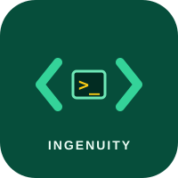
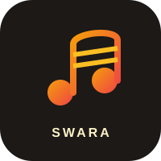

Ingenuity
Competitive programming and algorithmic problem solving.
Science & technologyA campus is shaped by the things students build, the ideas they share, the stages they step onto, and the communities they find. Start exploring student life at IIT Bhilai.
Indian Institute of Technology Bhilai
IIT Bhilai · About CoSA ↗The Council of Student Affairs (CoSA) is the student representative body that helps conduct and manage student-related activities at IIT Bhilai.
Through student representatives, CoSA supports holistic development, coordinates campus clubs and activities, and provides a channel for communicating student concerns to institute authorities.
From technical exploration to creative expression, sport, and community initiatives, student groups make space to learn with and from one another.
Different interests, shared campus. Browse the existing directories to find clubs, societies, and student groups to explore.
Explore communities around software, electronics, design, cybersecurity, space, and hands-on technical interests.
Browse tech clubs 02 — CREATE & EXPRESSDiscover spaces for music, dance, theatre, visual arts, photography, design, film, literature, and quizzing.
Browse cultural clubs 03 — CONNECT & CONTRIBUTEFind student groups and initiatives connected with mentorship, sports, welfare, and community participation.
Explore societiesA small selection from the student community landscape documented by IIT Bhilai. Visit the directories for the broader picture.

Competitive programming and algorithmic problem solving.
Science & technology
Open-source software and collaborative development.
Science & technologyDance society exploring hip-hop, contemporary, and stage performance.
Cultural council
A student space for music, performance, and creative practice.
Cultural councilRather than listing dates that may have passed, discover recurring student events documented by IIT Bhilai.
IIT Bhilai’s annual sports tournament brings students together across indoor and outdoor games. The 2025–26 institute brochure describes it as a two-month-long event.
An intra-institute cultural championship featuring activities across music, dance, drama, fine arts, photography, literature, and quizzes.